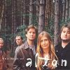

Celtic Lyrics Corner > Artists & Groups > Altan > The Best Of Altan
|  |
The Best Of Altan
(1997) |
||
| Tracks : |
Disk One
1. Tommy Peoples/The Windmill/Fintan McManus's 2. Moll Dubh A' Ghleanna 3. Jimmy Lyon's/The Teelin/The Red Crow/The Broken Bridge 4. The Sunset 5. Glory Reel/The Heathery Cruach 6. The Flower Of Magherally 7. Mazurka 8. A Bhean Udaí Thall 9. King Of The Pipers 10. 'Si Do Mhaimeo Í 11. The Jug Of Punch 12. The Emyvale/Ríl Gan Ainm/The Three Merry Sisters Of Fate 13. An Mhaighdean Mhara 14. Dúlamán 15. Drowsy Maggie/Rakish Paddy/Harvest Storm 16. An Feochán |
Disk Two
1. Con Cassidy's/Neil Gow's Highland/Moll And Tiarna/McSweeney's 2. The Yellow Tinker/Lady Montgomery 3. Thug Mé Rúide 4. Tá Mo Chleamhnas A Dhéanamh 5. The Curlew/McDermott's/Three Scones Of Boxty/Unnamed Reel 6. Tuirse Mo Chroí 7. Paddy's Trip To Scotland/Dinky's/The Shetland Fiddler 8. Johnny's Wedding/Rogue's Reel/The Gravel Walk |
|